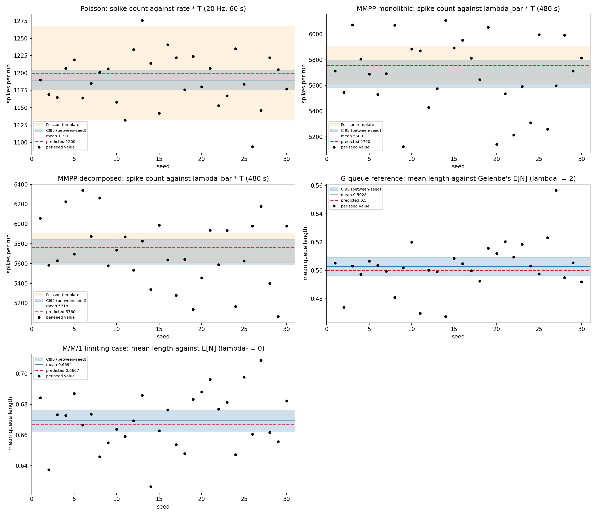
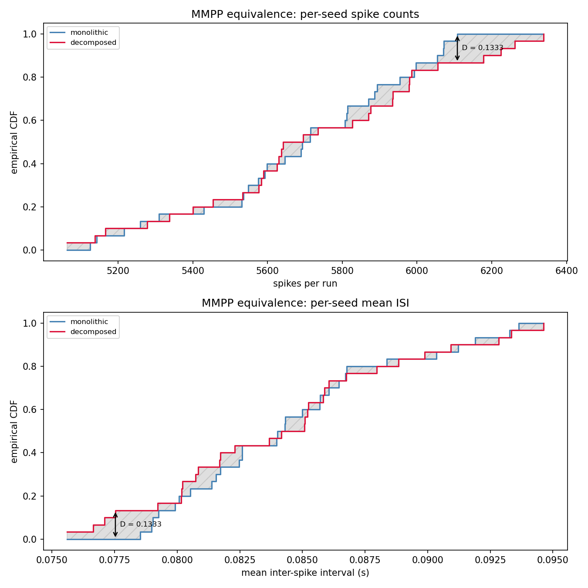

SimuBrAIn: Software Architecture for Stochastic Discrete-Event Simulation¶
IFT 3150 project, Summer 2026
Student: Ryan Chahri, Academic supervisor: Eugene Syriani (UdeM), Domain expert: Alexandre Muzy (CNRS), Daily supervisor: Abdelhamid (MSc).
This page is an English summary of the project. The detailed pages (research log, implementation, evaluation) are in French.
Context¶
SimuBrAIn is an international UdeM (Canada) / CNRS (France) research project whose long-term goal is to build personalized digital twins of the human brain. Axis 1, Objective 2 aims at a stochastic extension of DEVS: a single formalism able to express Poisson processes, Markov chains and queueing systems under one notation. That formalism is designed by Abdelhamid, a master's student on the project.
My scope
This project is not the stochastic DEVS extension. It answers a distinct and prior question: what software infrastructure lets you build a stochastic DEVS model whose correctness can be established?
Without an answer to that question, a stochastic extension of DEVS is an idea nobody knows how to verify. I built that infrastructure and put it to the test.
The problem¶
DEVS says how to describe a discrete-event system. It says nothing about how to write the code, nor about how to verify that the code is correct once the system contains randomness.
Written naively, a stochastic model conflates three concerns in a single class: the model logic, the source of randomness, and the verification of the resulting distribution. That conflation produces three concrete failures.
Three failures
1. Randomness welded to the model. If each model creates its own generator, construction order changes the results. Adding one neuron to a network perturbs the spike trains of every other neuron. Experiments stop being reproducible and models can no longer be tested in isolation.
2. Verification locked inside the model. If a model computes its own statistics, that verification code serves no other model and must be rewritten for every new source.
3. Nothing to compare the output against. An ordinary software test compares an obtained result to an expected one. A stochastic model has no expected result: it returns a different value on every run. "Is this model correct?" has no ready yes-or-no answer.
And one question that governs all the others. The same process can be written as a single block, or as several connected blocks doing the same thing together. The second form is what a brain-scale project needs, because only it composes and reuses. So:
How do you demonstrate that the multi-block version does the same thing as the single-block one?
Until that question has an answer, calling a stochastic extension of DEVS composable is a claim nobody can check.
Hypothesis¶
A stochastic DEVS model becomes reproducible, testable and composable under two commitments: three watertight layers, and three correctness criteria replacing the assert actual == expected that does not exist here.
The three correctness criteria¶
| Level | Name | Question | Nature |
|---|---|---|---|
| 1 | Invariants | Does the model obey its own rules, whatever is drawn? | Certainty |
| 2 | Conformance to theory | Does observed output fall inside the confidence interval around a closed form computed in advance? | Statistical |
| 3 | Equivalence | Are two writings of the same process statistically indistinguishable? | Statistical |
Level 1 runs no simulation: purity of timeAdvance, message-bag contract, rejection of invalid parameters, seed reproducibility, \(n \geq 0\) on a queue.
Level 2 computes the prediction from the model parameters alone. The theoretical function never reads simulation output, otherwise it would describe rather than predict.
Level 3 writes the same process twice, runs both, and checks that no statistical test can tell them apart.
The three layers¶
| Layer | Role | Guarantee |
|---|---|---|
| Randomness | Distributes random streams from a single seed | Each stream is identified by a label, not by draw order. Adding a model perturbs no other model's stream. |
| DEVS models | Simulation semantics, atomic and coupled | Randomness is injected, never created internally. A model declares what it needs; it does not help itself. |
| Verification | Compares observed to theoretical, draws the figures | Knows nothing of the simulator. It consumes plain lists of times or (t, value) records, so it can observe any present or future model unmodified. |
Dependencies point one way: models receive randomness, verification receives results. No arrow points back.
The central subtlety: two senses of "the same"¶
One might expect two equivalent writings to produce exactly the same event sequence. That is false, and it is the central trap of the project.
The two versions derive their generators along different label paths: the monolith descends through "neuron" then "spikes" and "transitions"; the decomposed version descends through "markov" to "transitions" and through "poisson" to "spikes". The roles correspond one to one, but the derivation keys differ, so the generators are seeded differently. Their traces necessarily differ. Requiring identical traces would declare every decomposition wrong, including the correct ones.
The right criterion is not "same sequence" but "same probability law". Two fair dice do not produce the same sequence of rolls; they are still the same die. That is the equality to be tested, and it is tested by comparing distributions.
Model families¶
Three families of increasing complexity, all measured on the same rig.
| Family | Writing | Rationale |
|---|---|---|
| Poisson | Monolithic only | Nothing to decompose: one source, one stream |
| MMPP | Both, then confronted | Two nested sources of randomness: the first case where decomposition is a real choice, hence the first that demands proof |
| G-networks (Gelenbe) | Decomposed from the start | The assembly is the model; a monolith would be meaningless for a network |
MMPP is therefore the test bench for the equivalence criterion: the simplest case where decomposing is possible and can be checked not to betray the model.
Results¶
The pytest suite is fully green (187 tests). Every number below comes from a single publication runner, never copied by hand:
python -m simubrain.experiments.run_validation_campaigns
\(K = 30\) independent seeds per family, \(\alpha = 0.05\). Every closed form falls inside the interval built from the observed between-seed dispersion.
| Criterion | Family | Prediction | Mean | CI95 | Verdict |
|---|---|---|---|---|---|
| 2 | Poisson, count | \(\lambda T = 1200.0\) | 1189.83 | [1175.66, 1204.00] | inside |
| 2 | Poisson, ISI | \(1/\lambda = 0.0500\) | 0.0504 | [0.0498, 0.0510] | inside |
| 2 | MMPP monolithic | \(\bar\lambda T = 5760.0\) | 5688.53 | [5582.16, 5794.91] | inside |
| 2 | MMPP decomposed | \(\bar\lambda T = 5760.0\) | 5717.70 | [5591.33, 5844.07] | inside |
| 2 | MMPP, ISI | \(1/\bar\lambda = 0.0833\) | 0.0845 | [0.0829, 0.0862] | inside |
| 2 | G-queue | \(\mathbb{E}[N] = 0.5000\) | 0.5028 | [0.4964, 0.5092] | inside |
| 2 | M/M/1 limiting case | \(\mathbb{E}[N] = 0.6667\) | 0.6694 | [0.6624, 0.6764] | inside |
| 2 | G-queue, \(P(N = 0)\) | 0.6667 | 0.6652 | [0.6629, 0.6676] | inside |
| 2 | G-queue, \(P(N = 1)\) | 0.2222 | 0.2226 | [0.2214, 0.2239] | inside |
| 2 | G-queue, \(P(N = 2)\) | 0.0741 | 0.0747 | [0.0735, 0.0758] | inside |
| 2 | G-queue, \(P(N = 3)\) | 0.0247 | 0.0250 | [0.0242, 0.0258] | inside |
| Criterion | Statistic | Kolmogorov-Smirnov | Cramér-von Mises |
|---|---|---|---|
| 3 | Count per seed | \(D = 0.1333\), \(p = 0.9578\) | \(W = 0.0381\), \(p = 0.9607\) |
| 3 | Mean ISI per seed | \(D = 0.1333\), \(p = 0.9578\) | \(W = 0.0372\), \(p = 0.9641\) |
Eleven conformance statements and four equivalence statements, all carried by the same instrument. The project does not build three models; it builds one measurement rig and applies it fifteen times.
Criterion 2 in one figure¶

Conformance to theory, one independent run per point. The blue band is the Student interval built from the between-seed dispersion; the dashed red line is the closed form computed from parameters alone. The orange band, on the first three panels, is the Poisson template \(\mu \pm 1.96\sqrt{\mu}\).
The contrast between panels is the argument. On Poisson, both bands agree, which is expected of a process whose variance equals its mean, and which makes this family the calibration point of the whole rig: if the two intervals disagreed here, the campaign machinery would be at fault, not the model. On the two MMPP panels, the orange band shrinks to a thin ribbon that half the points overshoot. That is over-dispersion, visible without commentary: a modulated process adds variance beyond the mean, so validating an MMPP against a Poisson template would mean measuring with the wrong instrument.
Criterion 3 in one figure¶

Equivalence between the two writings, thirty values each. The vertical bracket marks the maximum gap \(D\) that Kolmogorov-Smirnov reads; the hatched area between the curves is what Cramér-von Mises integrates.
Running both tests rather than one is deliberate. KS reads only the largest vertical gap between the two empirical distribution functions, while CvM integrates the squared gap over the whole support, which makes it more powerful against certain alternatives, in particular diffuse or tail differences. It is not "more precise"; it is sensitive to a different shape of discrepancy.
Scope and limitations¶
Stated rather than hidden.
- The equivalence test is a refutable empirical criterion, not a mathematical proof. Failing to distinguish two models is not demonstrating they are identical. Under the null hypothesis a p-value is uniform on \([0,1]\), so a high p-value is not a measure of similarity.
- The two equivalence statistics are not independent of each other. A run's mean ISI is very nearly \(T / \text{count}\), so the two samples share their between-seed ordering. KS, which reads ranks only, returns the same \(D\) on both. They are two readings of one measurement, not two separate confirmations.
- The whole-law comparison uses four marginal intervals, not a simultaneous confidence region. The occupancies of one run sum to 1, so they are not independent. The fully rigorous form would be a time-weighted chi-square test requiring the effective degrees of freedom of an autocorrelated signal.
- The modulated families start their chain in a fixed state rather than drawing it from the stationary distribution, which is a theoretical warm-up bias. Measured across horizons of 120 s, 480 s and 1920 s, the resulting deficit changes sign and is indistinguishable from noise at \(K = 30\).
- The unified meta-formalism is out of scope. It is designed by the team; this project supplies the infrastructure and the criteria.
Method notes¶
Two choices worth stating, because they are the ones a reader is most likely to question.
Why one observation per run. A statistic computed inside a run is not i.i.d.: the inter-spike intervals of an MMPP cluster by CTMC regime, and a queue-length trajectory is autocorrelated by construction. Feeding raw intra-run ISIs to KS produced p-values around \(10^{-3}\) for a maximum gap under 7 %, a false positive caused by a broken assumption rather than a real difference. Aggregating to one scalar per independent run restores independence between entries. Lowering \(\alpha\) until the test passed would have been p-hacking: correcting the verdict instead of correcting the input.
Why \(K = 30\). Not a validity threshold but a precision budget, fixed in advance and measured afterwards. It buys a half-width of 1.28 % of the predicted value on the queue and 1.85 % on the MMPP. The competing readings of \(\rho\) (0.25 for the faulty one, 0.5000 for the correct one, 0.6667 for the limiting case) are separated by tens of half-widths, so the rig discriminates between them unambiguously. Horizons matter too: on the MMPP, over-dispersion dominates the between-seed spread and decays in \(1/\sqrt{T}\), so multiplying the horizon by four did more for interval width than tripling the seed count.
Long-term impact¶
- For SimuBrAIn. The stochastic DEVS extension inherits a verification harness and a randomness scheme already exercised on three families. Above all it inherits the equivalence criterion: the instrument that lets you test, and not merely assert, that it decomposes correctly.
- For scale. The brain has roughly \(10^{11}\) neurons. Identifying random streams by name rather than by order of arrival is what makes it possible to replay one neuron without replaying the network, and to add a neuron without invalidating the others. That is not a technical detail, it is an architectural prerequisite.
- Beyond neuroscience. The three-layer separation and the three correctness criteria apply to any discrete-event system containing randomness: computer networks, epidemiology, industrial queueing.
Stack and reproducibility¶
Python 3.11, PyPDEVS 2.4.2, NumPy, SciPy, Matplotlib, pytest, ruff, Git/GitHub, MkDocs Material. The code uses a src-layout and separates atomic models, coupled models, the randomness layer, the simulator-agnostic verification layer, and the orchestration runners. The full validation, 150 runs including sixty of 1500 simulated seconds, completes in a few seconds on a laptop, from one command and one integer seed.
The French pages¶
- Vue d'ensemble: context, problem, hypothesis, solution
- Suivi: weekly progress log
- Journal de bord: technical and conceptual explorations, week by week
- Réalisation: architecture, components, design decisions
- Évaluation: test strategy, results, critical analysis, limitations